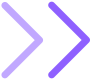
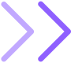

My name is Elizabet and I'm an UI/UX designer based in Sofia, Bulgaria.
I'm absolutely in love with creative problem solving! Whether it comes to fixing or decorating stuff around the house or a complex UX problem, I love putting my mind to work, researching and experimenting until I find a solution. In addition to being a naturally very creative person, who loves creating aesthetically pleasing designs, I found my true passion and dream career in UI/UX design!